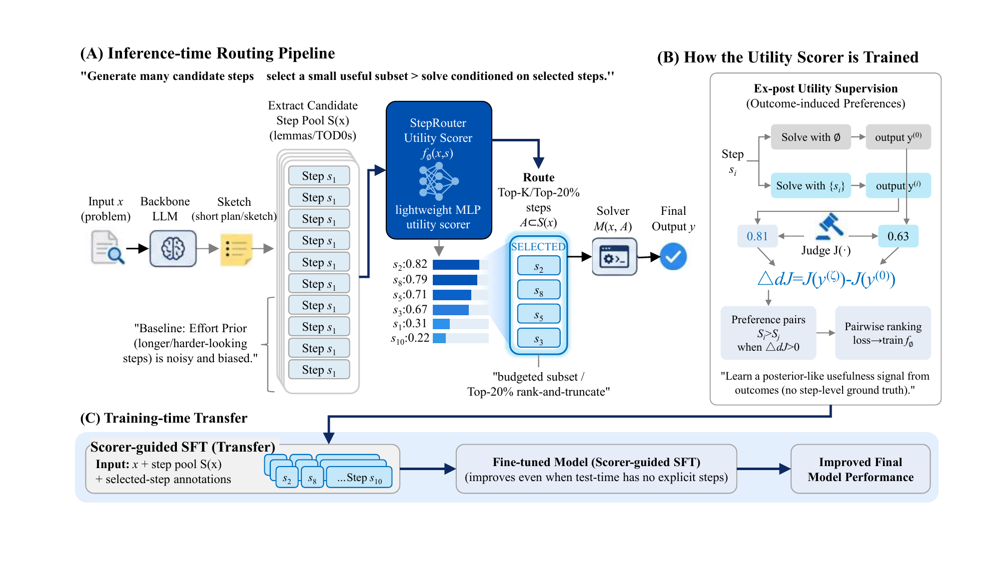

Estimate reasoning step utility and route only high-value steps to the solver.
Chain-of-Thought (CoT) and related reasoning paradigms rely on historical tokens—intermediate conclusions from prior steps. Not all historical tokens are equally useful, and the lost in the middle phenomenon makes indiscriminate accumulation harmful. We study how to rank and select historical tokens, organizing them at the granularity of steps, which manifest as lemmas in mathematics, TODOs in code, or other domain-specific units. As a first step, we compare two ways to rank candidate steps. The first is an effort prior, which favors steps that look expensive to verify. The second is an ex-post utility score, which measures how much a step improves the final answer per token, judged by a frontier model. Empirically, effort is nearly uncorrelated with true usefulness, while utility-based ranking substantially outperforms effort and other baselines at selecting high-value steps.
Despite the simplicity of these signals, we develop StepRouter, a lightweight posterior utility estimator that guides any backbone to rank steps by utility, routing only the top 20% for reuse. The results are surprisingly strong: StepRouter improves all tested models on several reasoning benchmarks, yielding +19.6% on LiveCodeBench with DeepSeek-R1, +23.2% with Qwen3-8B, and pushing GPT-5 to 97.2% on AIME. Fine-tuning Qwen3-8B with only 166 examples yields +12.2% on AIME (68.2% → 80.04%), demonstrating that models can internalize effective token utilization.

| Backbone | Method (Top-20% routing) | AIME (2025) | GPQA-Diamond | LiveCodeBench | |||
|---|---|---|---|---|---|---|---|
| Acc ↑ | Tok ↓ | Acc ↑ | Tok ↓ | Acc ↑ | Tok ↓ | ||
| DeepSeek-R1-0120 | Direct (no routing) | 70.42 | 21,392.45 | 68.52 | 14,835.26 | 70.00 | 17,642.14 |
| Effort Prior (Sketch → Steps → Final) | 75.51 | 23,686.24 | 75.12 | 18,260.26 | 81.06 | 20,491.14 | |
| Self-Consistency | 71.39 | 57,103.53 | 71.57 | 41,451.42 | -- | -- | |
| PRM (Qwen2.5-math-PRM) | 76.47 | 22,582.43 | -- | -- | -- | -- | |
| S1-like | 58.21 | 25,814.46 | 61.46 | 16,451.61 | 65.39 | 20,215.63 | |
| StepRouter (Utility Scorer) | 80.04 | 18,582.43 | 77.11 | 13,942.45 | 89.61 | 14,294.53 | |
| GPT-5 | Direct (no routing) | 92.63 | 8,449 | 82.02 | 9,455 | 82.10 | 15,479 |
| Effort Prior (Sketch → Steps → Final) | 96.26 | 12,932 | 88.52 | 14,621 | 89.70 | 18,363 | |
| PRM (Qwen2.5-math-PRM) | 95.42 | 11,462 | -- | -- | -- | -- | |
| S1-like | -- | -- | 80.52 | 10,471 | 81.53 | 16,365 | |
| Self-Consistency (3 samples) | 94.52 | 23,691 | 85.12 | 29,450 | -- | -- | |
| StepRouter (Utility Scorer) | 97.19 | 9,026 | 89.24 | 8,326 | 92.61 | 14,954 | |
| Qwen3-8B | Direct (no routing) | 68.16 | 20,484.1 | 62.01 | 8,977.21 | 57.56 | 6,536 |
| Effort Prior (Sketch → Steps → Final) | 70.25 | 21,305.93 | 65.14 | 9,523.9 | 70.46 | 13,786 | |
| Self-Consistency (3 samples) | 70.82 | 61,325.6 | 64.92 | 27,932 | -- | -- | |
| PRM (Qwen2.5-math-PRM) | 71.36 | 20,891.75 | -- | -- | -- | -- | |
| S1-like | 50.51 | 22,435.1 | -- | -- | -- | -- | |
| StepRouter (Utility Scorer) | 74.32 | 18,532 | 67.62 | 7,635.5 | 80.79 | 8,356 | |
@article{steprouter2026,
title={StepRouter: From Effort Priors to Utility Posteriors},
author={Anonymous Authors},
year={2026}
}